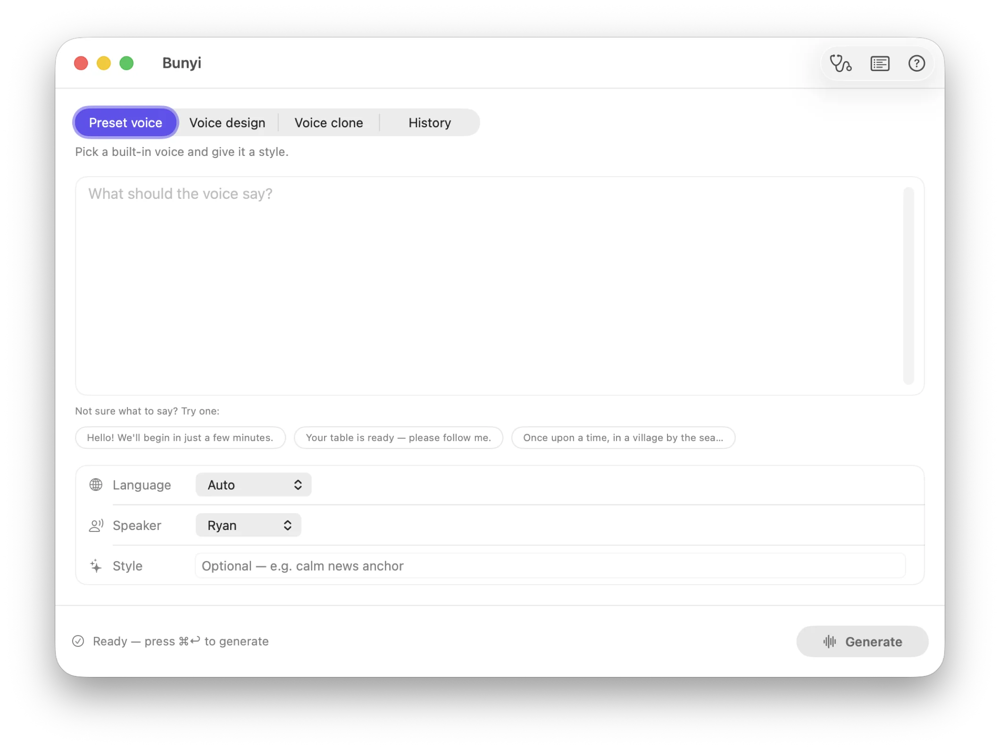
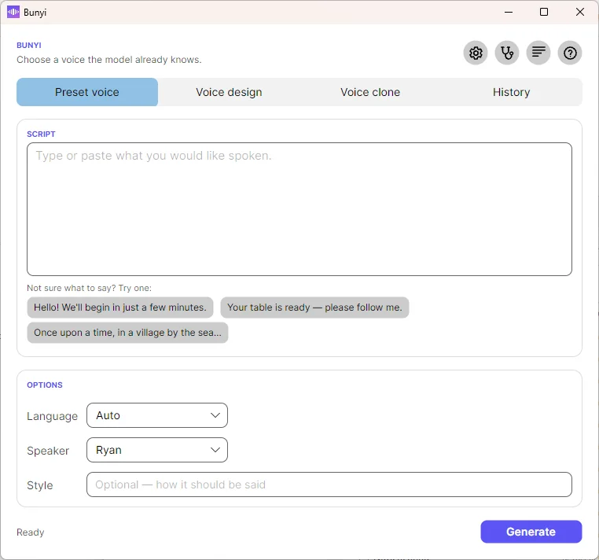

Text to speech that stays on your machine
Bunyi — BOON-yee, /ˈbuːɲi/ — is Malay/Indonesian for “sound.”
A desktop app for Qwen3-TTS built for people who don’t use a terminal. Pick a voice, describe one, or clone one from a clip. Models download themselves with a progress bar; after that it generates offline, and the audio never leaves your computer.
Version 1.1.0 — a signed, notarized disk image for Apple Silicon, macOS 15 or later. Open it and drag Bunyi to Applications. Windows and Linux builds are on the releases page — unzip and run, with no runtime to install.


Three ways to make a voice
One text box, three modes
A segmented picker at the top switches modes — plus a fourth tab, History, holding
everything you’ve made. Every generation is 24 kHz mono WAV, auto-played when it finishes and
saved to the app’s Outputs folder — one click from a reveal button.
Pick from the model’s speakers
Choose a built-in speaker, set a language, and optionally add a style instruction to steer emotion and delivery.
Describe the voice you want
Write a description — “a calm older narrator, slightly gravelly” — and the model builds a voice to match. Style instructions apply here too.
Match a reference clip
Give it a short clip and its transcript. Bunyi resamples to 24 kHz mono for you, and if you leave the transcript blank it transcribes the clip on-device.
Emotion and clones. Cloning runs on the Base model, which isn’t instruction-tuned, so there’s no style field in clone mode — the emotion has to come from the reference clip’s own delivery. Keeping one saved voice per emotion is the practical workaround. This is a limit of today’s 12 Hz models, not of the app.
What’s in the box
Built so nobody has to open a terminal
It tells you when it can’t run
A stethoscope in the toolbar checks whether this Mac can actually finish a generation: is the model downloaded, is there room on the disk, is there memory to load it, is the server it comes from answering, can the output folder be written to. It reports every check, passes included. The same checks run before every generation, so a problem is caught before a multi-gigabyte download rather than after it.
Manage models without leaving the app
Settings lists every downloaded model with its size and deletes it to the Trash. Reclaiming ten gigabytes no longer means hunting through Library folders — and model sources can be saved as named configurations and switched between.
A mirror when the Hub is slow
One click points all three modes at models.bunyi.app instead of Hugging Face — useful when the Hub is slow, and the difference between working and not working where it’s blocked. The same Apache-2.0 models, and every file is checked against a published SHA-256 as it arrives, on the mirror or on your own server.
Everything you’ve made, kept
A History tab lists every clip, newest first — what it said, which voice, when. Play it back with the progress drawn around the button, save a copy anywhere, copy the details, or move it to the Trash. It reads the folder, so deleting a file in the Finder removes it from the list too.
Every file remembers how it was made
The text, voice, language, and model are written inside the WAV itself, so a file you find months later still says what produced it. Standard RIFF tags, so ffprobe and ordinary audio apps read them too — not a sidecar file to lose.
Stop whenever you like
Generate becomes Stop while anything is running — a download, a transcription, a generation — and Escape works too. It tells you when it’s still winding down rather than pretending it stopped instantly.
Models download themselves
First generation in a mode fetches that model (~1.5–4.5 GB) with a progress bar and an ETA (“42% — about 3.1 MB/s, ~6 min left”). Resumable, incremental, and skipped entirely once complete.
Offline after that
A complete model on disk is used with no network at all. Generation, playback, and file output are local.
Stall detection
A disk monitor logs bytes-on-disk every 10 seconds during a multi-gigabyte file and warns when nothing new has landed for 30 — so a dead connection looks different from a slow one.
Saved voices
Store a clone recipe — name, reference clip, transcript. The clip is copied into app storage, so it survives relaunch and folder cleanups.
On-device transcription
Cloning needs the reference transcript to align audio to words. Leave it blank and the app transcribes locally (Apple’s Speech framework on macOS); anything you type wins.
Backup and restore
Archive the whole models folder to one stored (uncompressed) zip with a real progress bar and a Stop button. Restore merges per repo and never clobbers a model you already have.
Bring your own model host
Each mode takes a Hugging Face repo ID or an https:// base URL you control. Bunyi reads manifest.txt from your server and pulls the files directly. Publish a manifest.sha256 beside it — exactly what shasum -a 256 prints — and every file is verified as it downloads.
Your own models folder
Point storage at an external drive and it stays there across launches. Settings also shows copyable hf download commands with the real path filled in.
A real log window
Timestamped, selectable, copyable. Downloads, tokenizer steps, transcription results, token milestones, output paths and timings, and full error text.
Won’t lose your work
Closing the window mid-download or mid-generation asks first, with “Keep Working” as the safe default.
Status, honestly
Three operating systems, two codebases, one spec
Qwen3-TTS has no single cross-platform runtime — MLX is Apple-Silicon only — so Bunyi is native apps per platform, kept at feature parity by a shared specification rather than shared code.
| Target | Stack | Status |
|---|---|---|
| macOS Apple Silicon, macOS 15+ |
Swift + MLX + SwiftUI | Working Reference implementation; notarized download |
| Windows and Linux One app, both systems |
C# .NET + Avalonia + ONNX Runtime | Working All three modes; portable download |
The spec is the source of truth. Observable behavior lives in FEATURES.md, and on-disk layout lives in DATA-FORMATS.md — so a models folder, a backup zip, or a voices library is interchangeable between apps of the same runtime family. A feature change updates the spec and every app.
Get it running
Download it
Bunyi 1.1.0 is a signed and notarized disk image for Apple
Silicon Macs running macOS 15 or later. Open the .dmg, drag Bunyi to Applications, and
launch it — no Gatekeeper warnings, no terminal. A .zip of the same app is there for
scripted installs, alongside SHA-256 checksums for both.
The first generation in each mode downloads that mode’s model (about 1.5–4.5 GB) with a progress bar. After that it runs offline.
Or build it yourself
Building from source needs an Apple Silicon Mac running macOS 15 or later, with Xcode 26 (the app uses Swift 6.2 and mlx-swift’s Metal toolchain).
-
Clone and generate the Xcode project
The
.xcodeprojis generated fromproject.ymland isn’t checked in — edit the YAML, never the project.git clone https://github.com/shaztechio/bunyi-app.git cd bunyi-app/apps/macos brew install xcodegen xcodegen generate -
Install the Metal toolchain
Xcode 26 ships the Metal compiler separately, and mlx-swift compiles shaders. Skip this and the first build fails with “cannot execute tool ‘metal’”.
xcodebuild -downloadComponent MetalToolchain -
Build and run
Open
Bunyi.xcodeprojand press ⌘R, or build from the command line. Xcode resolves swift-qwen3-tts and its dependencies on the first build.xcodebuild -scheme "Bunyi" -destination 'platform=macOS' build -
Generate something
Type text, pick a mode, hit Generate. The first run in each mode downloads that mode’s model with a progress bar; every run after that is offline.
Working on Windows or Linux? Start from apps/dotnet/AGENTS.md and the spec. It can’t be built on a Mac.